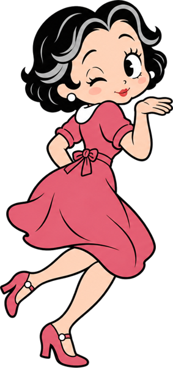
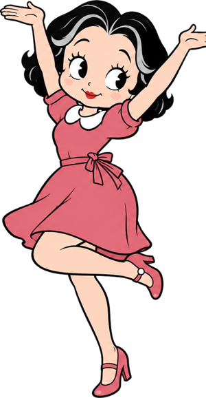
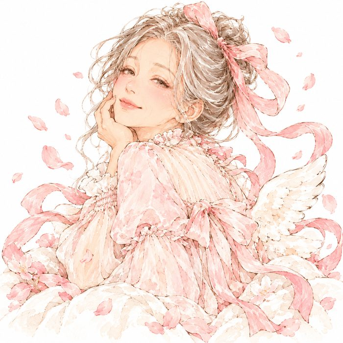
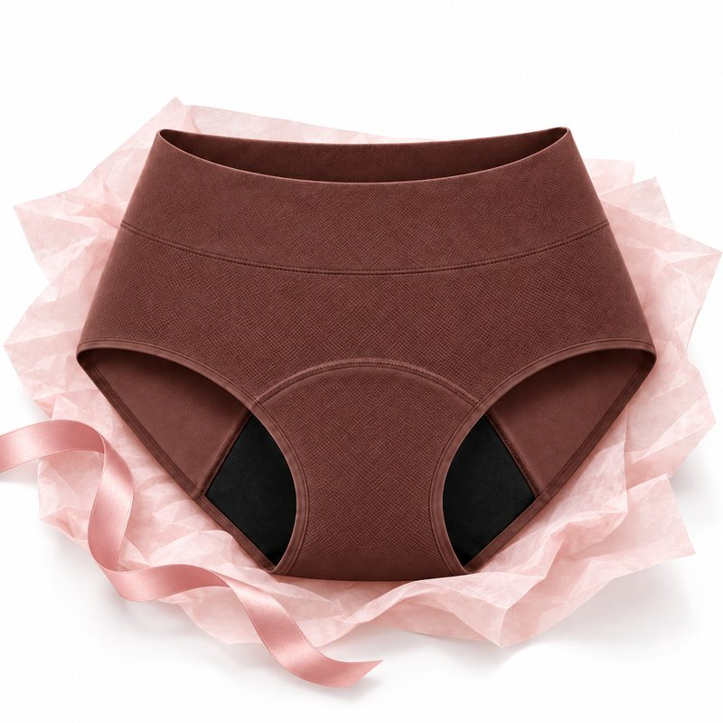
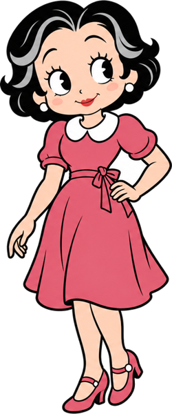
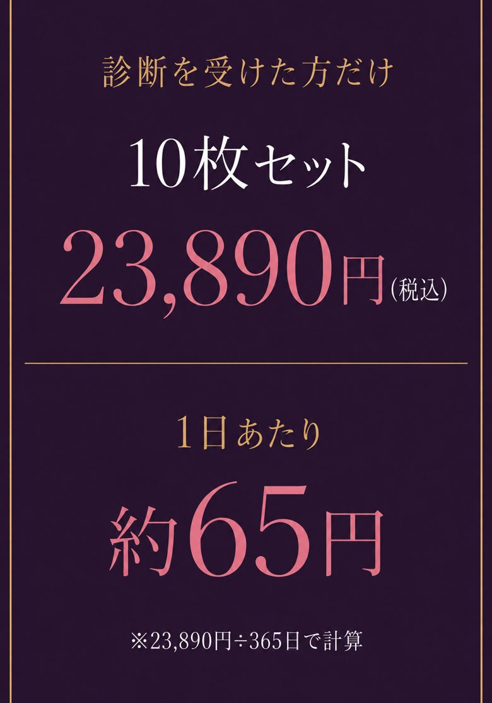

KOKOCHI DRY
PERSONAL DIAGNOSIS
尿もれに備える 吸水ショーツ

あなたのやさしさと品のよさを、
どんな下着が守ってくれる？
守られないままだと、少しずつ…
✅ムレでかぶれ、かゆみが続く
✅ニオイが気になり、人の輪から一歩引く
✅旅行も孫との外出も、あきらめていく
だから、あなたの毎日に合う吸水ショーツを
7つの質問で見つけます。
所要時間：約1分
© 2026 ここちドライ
© 2026 ここちドライ

あなたの安心を、
ここちさんが仕立て中…
やさしさと、品のよさと、
ほんの少しの自由。
・・・
綿80%のプレミアムコットン ｜ XSから4XLの8サイズ
© 2026 ここちドライ
あなたのタイプ
✦ あなたのための1枚
ここちドライをはくと
診断でわかったのは、タイプの名前だけじゃない。この1枚が、あなたの毎日でどう安心に変わるか。


あなたの毎日に、そっと寄りそう1枚。
FEMCARE + DAILY SHORTS
肌にやさしい、毎日の下着
あなたの肌に触れる面はさらっと、
ここちドライは"あなただけの安心"になる。
XSから4XLの8サイズから、体に合う1枚を。
外出も、夜も。
はくほどに、パッドのことを忘れていく。
吸水の層のしくみ
肌から外側まで、3つの働きで守る。
時間がたっても、肌はさらっとしたまま。
LAYER NOTE
肌面：さらっと速乾 ／ 吸水の層：コップ1杯分を受け止める ／ もれを止める層：外へ出さない ／ 外側の生地：綿80%のプレミアムコットン
※在庫がなくなり次第終了します。サイズ・色は申込の中で選べます。
ABOUT KOKOCHI DRY
ここちドライのこと
LAYERS
重なるつくり
吸水部は、肌面から外側まで
重なるつくり。
受け止めた水分を内側へ引き込み、
肌はさらっと。
DESIGNED WITH EXPERTS
専門家と一緒に
泌尿器科の専門機関と
共同で開発。
XSから4XLまで8サイズ。
ALL DAY ONE
一日これ1枚
外出から眠る時まで
これ1枚。
洗って何度でもはける。
★4.7・2,657件のレビュー。累計10,000件をこえて、
多くの女性に選ばれています。
※ストアの表示（2026年10月時点）
10枚セットなら、1年はき回して
1日あたり約65円※。
使い捨てパッドは1日約160円※なので、
毎日のパッド代の半分以下です。
5枚セット洗濯ネット1個つき
通常29,890円17,890円（税込）
10枚セット洗濯ネット2個つき
通常39,890円23,890円（税込）
30日間の返金保証・全国送料無料
※1日あたりは23,890円÷365日。パッドは1枚40円×1日4枚で計算

© 2026 ここちドライ